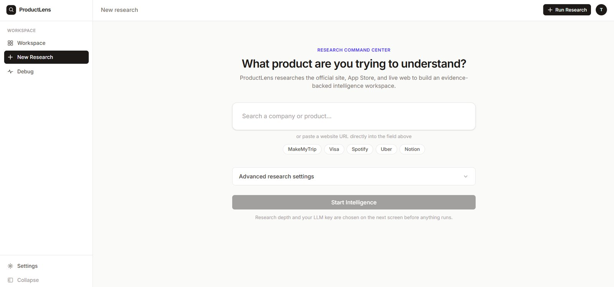

ProductLens
AI product intelligence. Research that ends in a decision, with the evidence still attached.
- Type
- Live product
- Domain
- AI · Multi-agent · Product tooling
- Owned
- Concept · Architecture · Workflows · Build

03 / ProductLens, research command centreproductlens-sigma.vercel.app
Product research dies in a document
Competitive analysis is expensive to do and almost never reused. Someone spends two weeks reading documentation, app-store reviews and changelogs, produces a deck, and the deck is stale before the next planning cycle. The research and the decision live in different places, so nobody can check whether the decision still follows from the evidence.
The gap I wanted to close was not research speed. It was the distance between a finding and the artefact a team actually works from.
Product managers, founders and analysts doing competitive and discovery work without a research team behind them.
From market signal to engineering handoff
ProductLens researches products, competitors, documentation, app-store data, reviews and market signals to surface product gaps and unmet user needs. It then carries those findings forward into the artefacts a team works from: PRDs, user stories, acceptance criteria, RACI matrices, experiment plans, metrics frameworks, roadmaps and engineering handoffs.
The competitive-analysis workflows compare capabilities, user pain points, market gaps and positioning, and end in recommendations that carry their evidence with them.
A recommendation without a source is a guess with better formatting.
01
Research agent
Gathers documentation, app-store data, reviews and market signals.
02
Competitive intelligence
Compares capabilities and positioning across a defined set.
03
Feature analysis
Breaks products down into what they actually do, not what they claim.
04
Gap identification
Finds the unmet needs the market has evidence for.
05
Strategy generation
Turns the gaps into product recommendations and planning artefacts.
Making an AI product trustworthy enough to act on
The hard problem in an AI research tool is not generation. It is that a confident, well-written, wrong recommendation is worse than no tool at all, because it is cheaper to act on.
Three decisions follow from that. Source attribution, so every claim can be traced back. Confidence scoring, so weak findings look weak on the page. Evidence tracking, so a recommendation can be re-checked when the market moves. Together they reduce unsupported AI-generated recommendations, which was the actual product risk.
The architecture is BYOK and multi-LLM: users bring their own key and choose their model. That is a positioning decision as much as a technical one. It makes cost and data handling the user’s call, which is what this audience wants.
BYOK raises the setup cost for a first-time user. It buys trust from exactly the users worth having.
The hardest screen in a research tool is the empty one
A blank research tool has to answer three questions at once. What do I type, what is this going to cost me, and can I trust what comes back. The entry screen is where the product either earns a first run or loses it.
One input that accepts either a company name or a URL, because people arrive with whichever they happen to have and making them choose adds a decision nobody wants. Five example products sit underneath it. Those are not decoration. They are the fastest way to show what a good input looks like, and they let someone see the output shape before committing a key of their own.
The primary action stays disabled until there is something to run. A button that looks ready and then errors is worse than one that visibly waits.
Under it, a line saying research depth and the LLM key are chosen on the next screen before anything runs. In a bring-your-own-key product the user is spending their own money, so the one thing an entry screen must never do is start something expensive by surprise. Saying so up front costs a line of text and buys the willingness to press the button.
It had to read as a research tool rather than a chat box. The promise is evidence, and an interface that looks like a conversation quietly promises something else.
What I would measure next
The honest test of this product is not usage. It is whether a recommendation it produced ever changed a roadmap, and whether the person who acted on it could still find the evidence a month later.
Whether a recommendation it produced ever changed a roadmap, and whether the person who acted on it could still find the evidence a month later. Usage is the easy number and the wrong one.
The 0→1 consumer product at the centre of this portfolio.